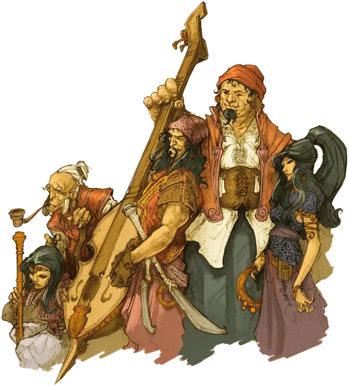

Обыватель Вистани
Vistana Commoner
Средний Гуманоид (Любая раса), любое мировоззрение

Класс Доспеха 10
Хиты 4 (1к8)
Скорость 30 футов
| мод | спас | ||
|---|---|---|---|
| СИЛ | 10 | +0 | +0 |
| ЛОВ | 10 | +0 | +0 |
| ТЕЛ | 10 | +0 | +0 |
| мод | спас | ||
|---|---|---|---|
| ИНТ | 10 | +0 | +0 |
| МДР | 10 | +0 | +0 |
| ХАР | 10 | +0 | +0 |
Чувства пассивное Восприятие 10
Языки Общий
Опасность 0
Бонус мастерства +2
Действия
Дубина. Рукопашная атака оружием: +2 к попаданию, досягаемость 5 футов, одна цель. Попадание: Дробящий урон 2 (1к4).
Проклятия Вистани (Перезарядка после Продолжительного отдыха). Вистана выбирает видимую цель в 30 футах от себя. Цель должна преуспеть в спасброске Мудрости Сл 10, чтобы избежать проклятия. Проклятие действует, пока не будет снято заклинаниями вроде снятие проклятья [remove curse],высшее восстановление [greater restoration] и другими им подобными. Оно не прекращает действовать, когда цель умирает. Если проклятая цель будет возвращена к жизни, проклятие продолжает действовать.
Когда проклятие разрушается, вистана получает болезненный психический откат. Величина психического урона зависит от тяжести наложенного проклятия.
Вистана выбирает эффект проклятия из приведенных ниже опций; возможны и другие варианты проклятий вистани. Все такие эффекты, по окончании своего действия, наносят урон психической энергией вистани, наложившему его.
• Цель не способна производить некоторые виды действий, включающие тонкие манипуляции, такие как завязывание узлов, игру на инструментах, работу с ниткой и иголкой или накладывание заклинаний с соматическими компонентами. Когда проклятие разрушается, вистана получает 1к6 урона психической энергией.
• Внешний вид цели меняется, становясь более зловещим, но это лишь внешний эффект. Например, проклятие может создать шрам на лице жертвы, превратить зубы цели в желтоватые клыки или сделать дыхание цели зловонным. Когда проклятие разрушается, вистана получает 1к6 урона психической энергией.
• Немагический предмет (по выбору Мастера), которым владеет цель, пропадает и не может быть найден пока не закончится проклятие. Пропавший предмет не может весить более 1 фунта. Когда проклятие разрушается, вистана получает 1к6урона психической энергией.
• Цель получает уязвимость к типу урона по выбору вистанки. Когда проклятие разрушается, вистана получает 3к6 урона психической энергией.
• Цель получает помеху на проверки способности и спасброски, связанные с одной характеристикой по выбору вистанки. Когда проклятие разрушается, вистана получает 3к6 урона психической энергией.
• Настройка цели к одному из его магических предметов (по выбору Мастера) пропадает и цель не может более настроиться к этому предмету, пока проклятие не будет разрушено. Когда проклятие разрушается, вистана получает 5к6 урона психической энергией.
• Цель слепнет, глохнет или оба эффекта одновременно. Когда проклятие разрушается, вистана получает 5к6 урона психической энергией.
Сглаз (Перезарядка после Короткого или Продолжительного отдыха). Действием вистана может выбрать целью существо, которое он может видеть, в 10 футах от себя. Эта волшебная способность, которую вистани называют Сглазом, повторяет длительность и эффект заклинаний дружба с животными [animal friendship], очарование личности [charm person], удержание личности [hold person] (по выбору вистаны), но не требует ни соматических, ни материальных компонентов. Сл спасброска 10. Если цель преуспевает в спасброске, вистана слепнет до конца своего следующего хода.
Вистана, использовавший Сглаз, не может использовать его пока не совершит короткий или продолжительный отдых. Как только цель преуспеет в спасброске против Сглаза вистани, она остаётся иммунной к Сглазу всех вистани на 24 часа.
Описание
Обывателями считаются крестьяне и крепостные, рабы и слуги, скитальцы, торговцы, ремесленники и отшельники.